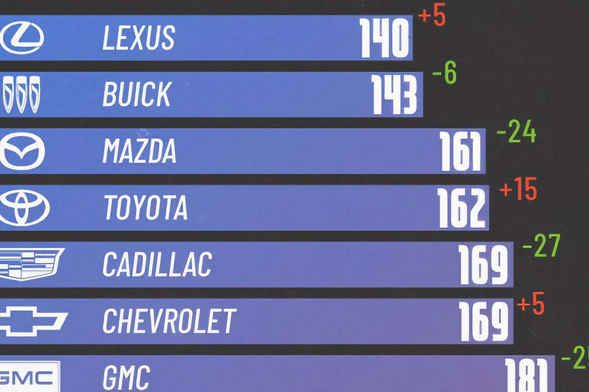

Las marcas de coches más y menos fiables de 2025, en un gráfico dominado por Japón y con una sorpresa: Tesla

Comprar un coche es un auténtico quebradero de cabeza. Es lógico si tenemos en cuenta que, habitualmente, después del de la vivienda, la compra de un coche es el mayor gasto que realizamos. Hay muchas variables a tener en cuenta (motorización, seguridad, más o menos pantallas…) y algo que conviene mirar son las listas de los coches más fiables. Hay varias, como las de Consumer Reports o J.D. Power, que nos ayudan a tomar la decisión.
Y, precisamente, en este gráfico elaborado por Visual Capitalist tenemos la lista de las marcas más fiables de 2025 según una de estas bases de datos.

Más tecnología, más problemas. Cuanta más opciones tenga un dispositivo, más posibilidades hay de que algo falle. Es algo que seguro que has oído: no te compres una lavadora-secadora porque seguro que falla más que una lavadora y una secadora por separado (inserta el ejemplo que quieras con un microondas-horno o lo que sea). Pues, en el caso de los coches, según los informes de J.D. Power, la mitad de los principales problemas de toda la industria están relacionados con la gran novedad de los últimos años: la integración con los smartphones y los sistemas Android Auto y Apple CarPlay.